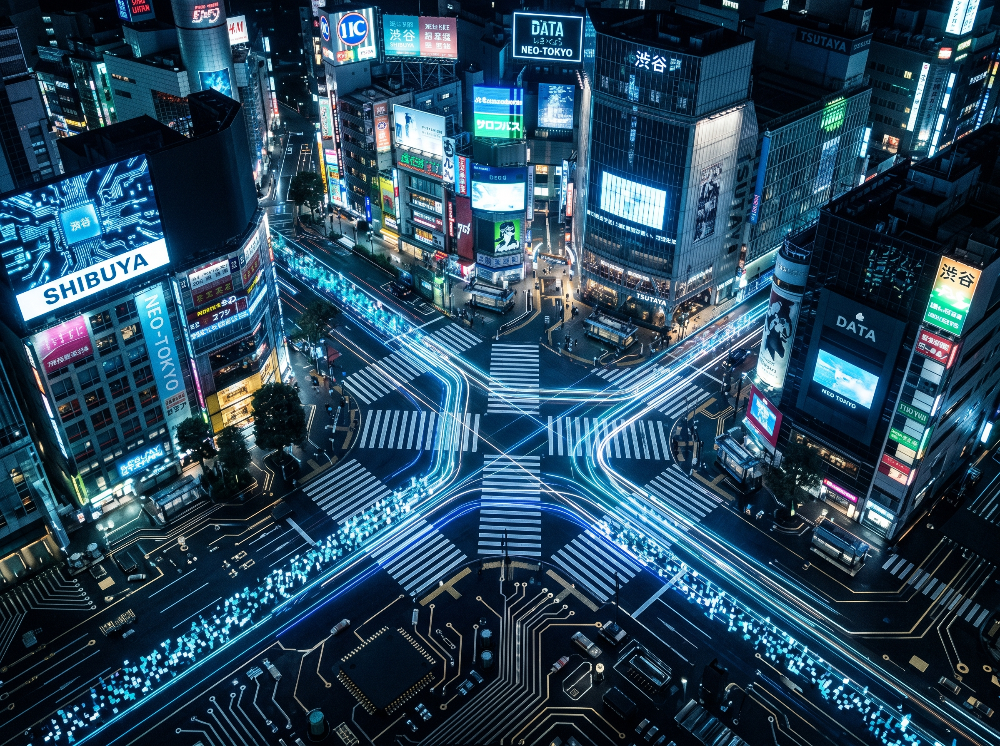
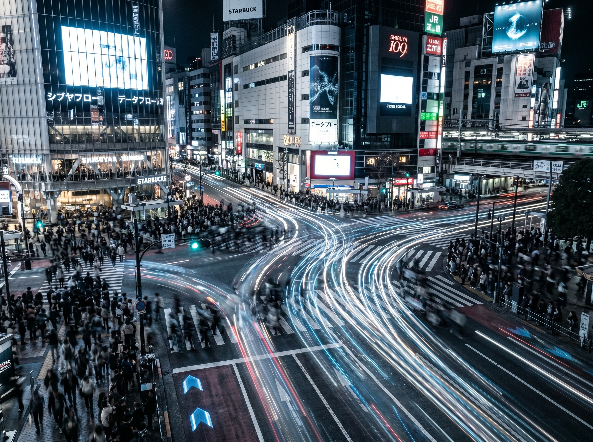

Kiri once described this crossing
as a place of silent harmony.
And honestly, I understand why.
But every time I stand here,
I feel something else entirely.
Something colder.
More artificial.
More mechanical.
To me, Shibuya Scramble Crossing
does not feel like a place
where people naturally gather.
It feels engineered.

Signals. Staircases. Underground corridors. LED screens large enough to overpower the sky.
Everything here seems designed for one purpose: to regulate human flow.
Signals.
Staircases.
Underground corridors.
LED screens large enough to overpower the sky.
An endless choreography of light, sound, and movement.
Everything here seems designed for one purpose:
To regulate human flow.
As though the city itself were optimizing
its own internal circulation.
You Are Not Really Walking Here
That is the strange feeling
this crossing creates.
You believe you are moving by choice.
But the moment the signal changes,
the city begins moving you.
The crowd advances.
You advance with it.
And suddenly, the boundary
between your own intention
and the rhythm of Tokyo
becomes difficult to separate.
Sometimes Tokyo feels less like a city
where people travel…
…and more like a system
where people are processed.
Toward the station.
Into the underground passageways.
Through ticket gates.
Into elevators.
Into office towers.
Millions of bodies transferred smoothly
through an enormous urban mechanism.
And somehow, it all happens
with almost no friction.
That may be the most unsettling part.

In many cities, someone stops suddenly. Someone shouts. Someone interrupts the flow.
But Tokyo is designed under a different assumption: movement should never stop.
In many cities overseas,
human presence dominates the street.
Someone stops suddenly.
Someone shouts.
Someone interrupts the flow.
But Tokyo rarely behaves that way.
Of course, politeness is part of it.
But I think something deeper is happening.
Tokyo is designed under the assumption
that movement should never stop.
Efficiency exists before emotion.
And perhaps that is why this city
often feels strangely futuristic —
even now.
Filmmakers have sensed this for decades.
Lost in Translation captured the loneliness
hidden inside the system.
Resident Evil transformed Tokyo
into a giant machine.
Both understood the same unsettling truth:
In this city, the system often feels
more powerful than the individual.
Sometimes I Wonder Who This City Is Really For
Watching this crossing long enough
raises a strange question.
Who is this machine actually serving?
Of course, Tokyo is efficient.
Beautiful, even.
Its precision is almost unbelievable.
But at the same time,
it often feels as though human beings
are the ones adapting themselves to the city —
not the other way around.
Walking speed.
Standing position.
Direction of movement.
Everything gradually synchronizes
with the requirements of the system.
Tokyo was built by humans.
And yet sometimes,
late at night beneath the screens
of Shibuya Scramble Crossing,
it feels as though the city
has developed a will of its own.